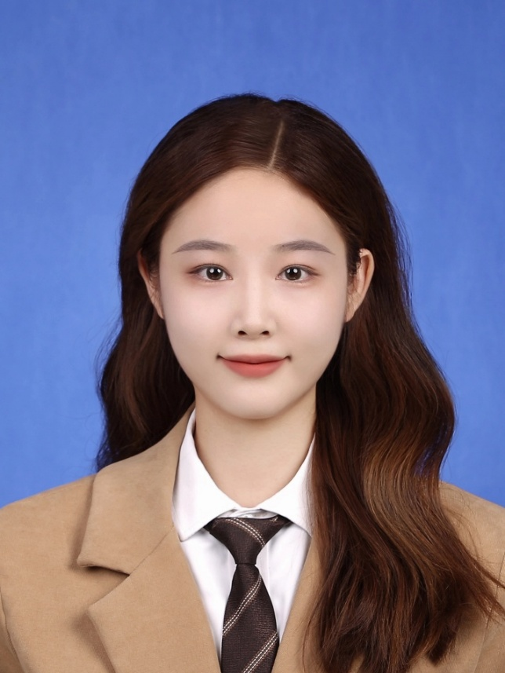
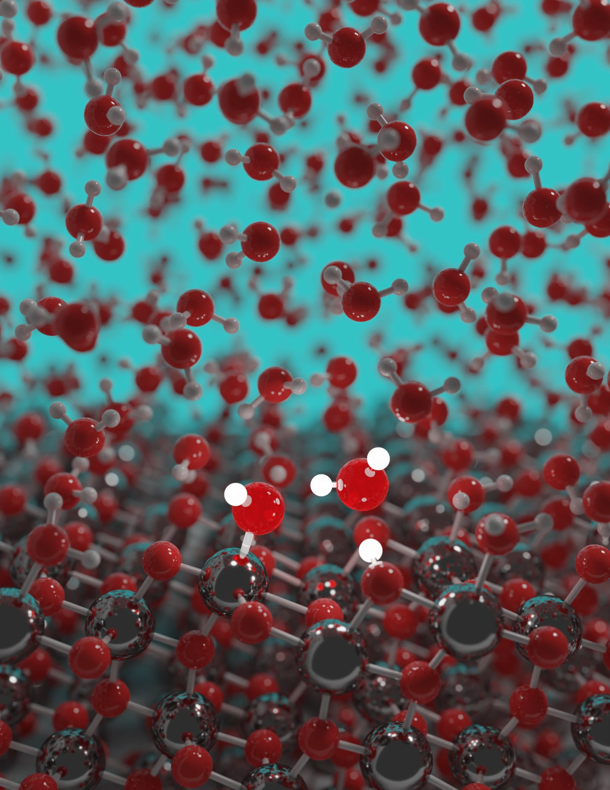
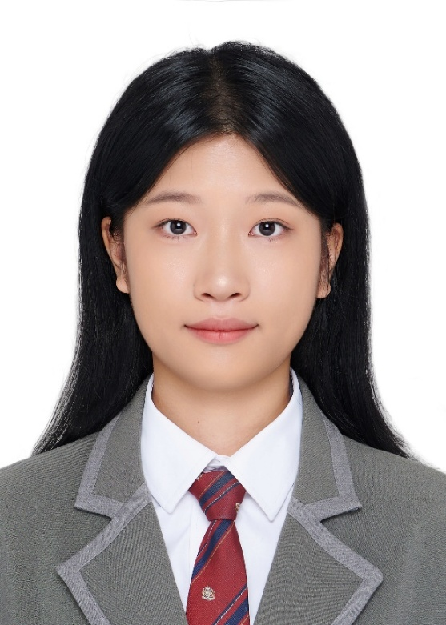

Jianing Wang
Visiting master's student
Henan University
Chemical physics of solutions & interfaces
We explore the structure, dynamics and reactions of matter at the atomic scale, combining statistical physics, quantum mechanics and machine learning.

01 / Research
Based on the fundamental principles of statistical physics and quantum mechanics, we combine machine learning with first-principles approaches to study complex physicochemical behavior of matter at the atomic scale, focusing on the structure, dynamics and reaction processes of water, electrolytes and solid–liquid interfaces. By developing generalizable multiscale theoretical frameworks, we aim to reveal the fundamental laws of matter and improve predictions of the properties of complex condensed matter systems.
School of Physics
Eastern Institute of Technology, Ningbo
02 / Principal investigator
Assistant Professor · Associate Research Fellow · PhD Supervisor
03 / People
Chemical physics of solutions and interfaces
Eastern Institute of Technology, Ningbo

Visiting master's student
Henan University

Joint PhD student
Shanghai Jiao Tong University
Joint PhD student
The Hong Kong Polytechnic University
Joint PhD student
Shanghai Jiao Tong University
Postdoctoral researcher
04 / Publications
Electric-field control of interfacial water dissociation.
Read the paper ↗A molecular picture of the electrical double layer.
Read the paper ↗The microscopic origin of the dielectric decrement.
Read the paper ↗Ion-induced changes in the hydrogen-bond network.
Read the paper ↗38 publications · updated: 10 October 2026
The Journal of Physical Chemistry Letters 17 (40), 11364–11373 (2026)Journal article · Publisher ↗
Science Advances 12 (22), eaec6748 (2026)Journal article · Scholar ↗
The Journal of Chemical Physics 164 (14) (2026)Journal article · Scholar ↗
Physical Review Letters 136 (5), 056202 (2026)Journal article · Scholar ↗
arXiv preprint arXiv:2512.23940 (2025)Preprint · Scholar ↗
arXiv preprint arXiv:2512.23939 (2025)Preprint · Scholar ↗
The Journal of Chemical Physics 163 (18) (2025)Journal article · Scholar ↗
The Journal of Chemical Physics 163 (18) (2025)Journal article · Scholar ↗
Proceedings of the National Academy of Sciences 122 (34), e2505929122 (2025)Journal article · Scholar ↗
PRX Energy 4 (2), 023004 (2025)Journal article · Scholar ↗
SMT 2025 (2025)Conference abstract · Scholar ↗
SMT 2025 (2025)Conference abstract · Scholar ↗
Nature Communications 15 (1), 10270 (2024)Journal article · Scholar ↗
arXiv preprint arXiv:2404.00167 (2024)Preprint · Scholar ↗
Bulletin of the American Physical Society (2024)Conference abstract · Scholar ↗
Bulletin of the American Physical Society (2024)Conference abstract · Scholar ↗
Physical Review Letters 131 (7), 076801 (2023)Journal article · Scholar ↗
arXiv preprint arXiv:2307.03873 (2023)Preprint · Scholar ↗
Bulletin of the American Physical Society (2023)Conference abstract · Scholar ↗
The Journal of Physical Chemistry A 126 (49), 9154–9164 (2022)Journal article · Scholar ↗
Physical Review B 106 (17), 174107 (2022)Journal article · Scholar ↗
The Journal of Chemical Physics 157 (2) (2022)Journal article · Scholar ↗
Proceedings of the National Academy of Sciences 119 (20), e2201258119 (2022)Journal article · Scholar ↗
Nature Communications 13, 822 (2022)Journal article · Scholar ↗
Physical Review B 105 (1), 014304 (2022)Journal article · Scholar ↗
APS March Meeting Abstracts 2022, N46. 011 (2022)Conference abstract · Scholar ↗
APS March Meeting Abstracts 2022, W49. 009 (2022)Conference abstract · Scholar ↗
The Journal of Physical Chemistry B 125 (41), 11444–11456 (2021)Journal article · Scholar ↗
Physical Review Materials 5 (1), L012801 (2021)Journal article · Scholar ↗
APS March Meeting Abstracts 2021, Y22. 004 (2021)Conference abstract · Scholar ↗
APS March Meeting Abstracts 2021, L25. 002 (2021)Conference abstract · Scholar ↗
Physical Review B 102 (21), 214113 (2020)Journal article · Scholar ↗
Physical Review B 102 (11), 115155 (2020)Journal article · Scholar ↗
Bulletin of the American Physical Society 65 (2020)Conference abstract · Scholar ↗
Physical Review B 98 (14), 144301 (2018)Journal article · Scholar ↗
Carbon 131, 38–46 (2018)Journal article · Scholar ↗
APS March Meeting Abstracts 2018, C12. 002 (2018)Conference abstract · Scholar ↗
Physical Review E 94 (5), 052131 (2016)Journal article · Scholar ↗
No matching publications. Try another keyword or filter.
Journal articles, preprints and conference abstracts are listed separately by type. Different versions of a study may appear as distinct Scholar records.
Join us
We welcome applications from prospective PhD students and postdoctoral researchers with backgrounds in physics, chemistry, materials science or related fields.
To discuss research interests and opportunities, please contact Chunyi Zhang.
Get in touch ↗chunyizhang@eitech.edu.cn